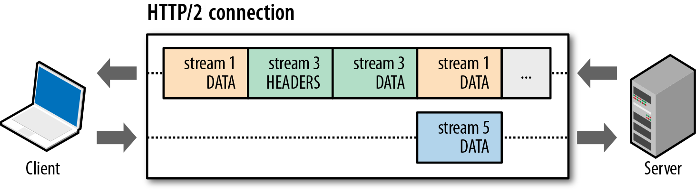
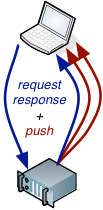
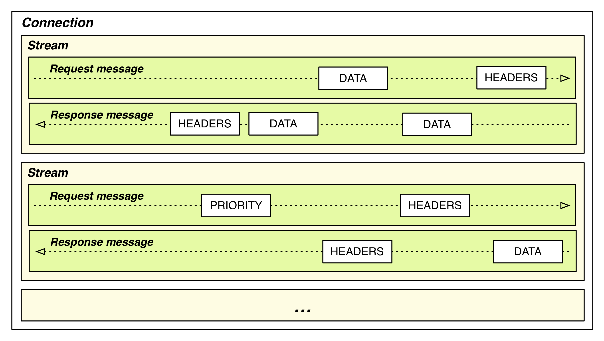
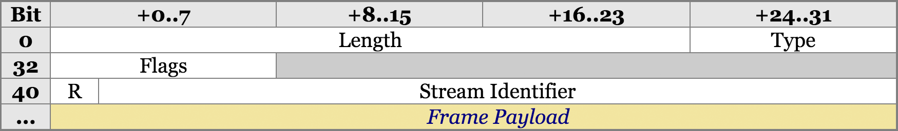
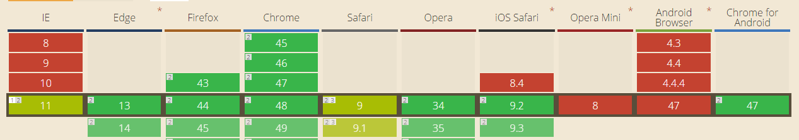

HTTP/2
Everything you know is wrong!
Author by Erik Onarheim / @erikonarheim
About me
Web Hoster
Software Developer
Video Game Enthusiast
excaliburjs.com

So HTTP/2...
It has been over 15 years in the making
What is it?
Why do we need a new protocol?
HTTP/2 for the modern web
Performance matters!
HTTP/1.1 Holds back the internet
HTTP/2
HTTP/2 is the new version of HyperText Transport Protocol(HTTP), which was released as an IETF standard in early 2015.
What's new in HTTP/2
- Connection multiplexing
- HPACK header compression
- Server Push
- Request prioritization
- Binary in transit
- HTTP/2 is SSL only***
- Backwards compatability to HTTP/1.1 with protocol negotiation
- The HTTP/1.1 request/response verb semantics you know and love are the same
You said the words connection multiplexing, what does that even?
One connection for everything
Okay what does multiplexing get me?
- Head of line blocking is gone
- Fewer longer lived connections
- Inlining/Bundling/Concatenating/Spriting is bad
HTTP/1.1
- 6 connections per domain, request block each connection
- Pay the tcp connection cost for each
- Pay the ssl connection cost for each
HTTP/2
- 1 connection, multiple streams many concurrent requests/responses
- Request and responses (messages) don't block tcp connection
- Smaller resources are better for caching
- Demo
Holy Header Compression Batman (w/HPACK)
- Static table - special "known" header fields
- Dynamic table - custom headers, cookies, etc
- Shared header state
- Indexed vs. Literal header (bidirectional)
Binary transit
HTTP/1.1 is a text protocol
HTTP/2 is a binary protocol
Telnet can no longer be used for debugging http/2, but Wireshark already supports it!
Server Push!!
Push Promise in C# (IIS 10 or Server 2016)
namespace TinyHttp2.Controllers
{
public class HomeController : Controller
{
public ActionResult Index()
{
ViewBag.Title = "Home Page";
HttpContext.Response.PushPromise("~/Scripts/testscript.js");
HttpContext.Response.PushPromise("~/Content/bootstrap.css");
HttpContext.Response.PushPromise("~/Content/site.css");
HttpContext.Response.PushPromise("~/Scripts/modernizr-2.6.2.js");
HttpContext.Response.PushPromise("~/Scripts/jquery-1.10.2.js");
HttpContext.Response.PushPromise("~/Scripts/bootstrap.js");
HttpContext.Response.PushPromise("~/Scripts/respond.js");
return View();
}
}
}Some Fuzzy Perf numbers
| Test | Time |
|---|---|
| PushPromise default ASP.NET Template HTTP/2 | ~100ms |
| No PushPromise default ASP.NET Template HTTP/2 | ~240ms |
| default ASP.NET Template HTTP/1.1 | ~200ms |
Prioritization
Clients can prioritize requests 1 (lowest priority) to 256 (highest priority)
Protocol Negotiation
GET /page HTTP/1.1
Host: server.example.com
Connection: Upgrade, HTTP2-Settings
Upgrade: h2c 1
HTTP2-Settings: (SETTINGS payload) 2
// Server declines
HTTP/1.1 200 OK 3
Content-length: 243
Content-type: text/html
(... HTTP/1.1 response ...)
// Server accepts with a 101 switching protocols
HTTP/1.1 101 Switching Protocols 4
Connection: Upgrade
Upgrade: h2c
(... HTTP/2 response ...)The HTTP/2 Connection
The HTTP/2 Connection
Frames
- 24 bits to mark length of payload
- 8 bits to indicate the type of frame (PUSH, RST_STREAM, DATA, etc)
- 8 bits for frame specific flags
- 1 bit reserved for giggles, always 0
- 31 bits to uniquely identify the HTTP/2 stream - clients are always odd, servers are even to prevent collision
- The rest is payload depending on the length specified
Frame Types
- DATA (0x0)
- HEADERS (0x1)
- PRIORITY (0x2)
- RST_STREAM (0x3)
- SETTINGS (0x4)
- PUSH_PROMISE (0x5)
- PING (0x6)
- GOAWAY (0x7)
- WINDOW_UPDATE (0x8)
- CONTINUATION (0x9)
Converting an HTTP/1.1 to a HTTP/2 request
HTTP/1.1GET /index.html HTTP/1.1
Host: mycoolwebsite.com
Accept: text/htmlHEADERS
+ END_STREAM
+ END_HEADERS
:method = GET
:scheme = https
:path = /index.html
host = mycoolwebsite.com
accept = text/htmlWhat about a post in HTTP/2?
HTTP/1.1 POSTPOST /api/books HTTP/1.1
Host: mycoolwebsite.com
Content-Type: application/json
Content-Length: 123
{somejson}HEADERS
- END_STREAM
- END_HEADERS
:method = POST
:scheme = https
:path = /api/books
CONTINUATION
+ END_HEADERS
content-type = application/json
host = mycoolwebsite.com
content-length = 123
DATA
+ END_STREAM
{binaryencodedjson}Great, can I use this yet
Yes, most clients in the world support this
http://caniuse.com/#feat=http2 
Hmmm, but what about the server...
Still not sold, I use a CDN!
Most CDNs have or will have this by 2016
- CloudFlair
- Incapsula
- KeyCDN
- Akamai
- EdgeCast (Q3 timeframe)
- MaxCDN (2016 sometime)